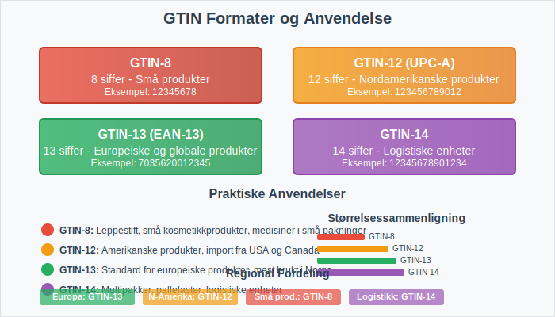
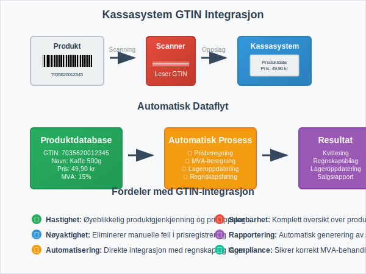
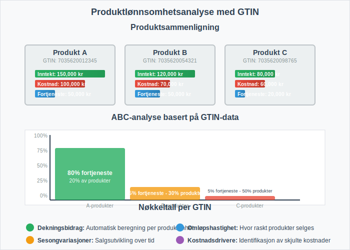

GTIN (Global Trade Item Number) og EAN (European Article Number) er globale standarder for produktidentifikasjon som spiller en kritisk rolle i moderne regnskapsføring og forretningsdrift. Disse kodene muliggjør automatisk identifikasjon av produkter gjennom hele verdikjeden, fra produksjon til salg, og er essensielle for effektiv lagerstyring, fakturabehandling og regnskapsautomatisering.
For entydig identifikasjon av logistikkpartnere og lagringssteder anbefales det også å bruke GLN-nummer.
Seksjon 1: Hva er GTIN og EAN?
GTIN (Global Trade Item Number) er en internasjonal standard for unik identifikasjon av handelsvarer. EAN er den europeiske varianten av denne standarden, som nå er integrert i det globale GTIN-systemet. Disse kodene sikrer at hvert produkt har en unik identifikator som kan gjenkjennes globalt, noe som er avgjørende for moderne detaljhandel og engroshandel.

Hovedformål med GTIN/EAN:
- Unik produktidentifikasjon på tvers av alle markeder og systemer
- Automatisering av lagerstyring og salgsregistrering
- Standardisering av produktdata mellom handelspartnere
- Effektivisering av bilagsføring og regnskapsføring
- Forbedret sporbarhet gjennom hele verdikjeden
Seksjon 2: GTIN-formater og Struktur
GTIN-systemet består av flere formater avhengig av produkttype og anvendelsesområde. Alle GTIN-koder følger en strukturert oppbygging som sikrer global unikhet og automatisk validering.

Oversikt over GTIN-formater:
| Format | Lengde | Anvendelse | Eksempel |
|---|---|---|---|
| GTIN-8 | 8 siffer | Små produkter med begrenset plass | 12345678 |
| GTIN-12 (UPC-A) | 12 siffer | Nordamerikanske produkter | 123456789012 |
| GTIN-13 (EAN-13) | 13 siffer | Europeiske og globale produkter | 1234567890123 |
| GTIN-14 | 14 siffer | Logistiske enheter og multipakker | 12345678901234 |
Strukturelle Komponenter:
- Prefikskode: Identifiserer landet eller regionen (Norge: 700-709)
- Bedriftskode: Unik identifikator for produsenten
- Produktkode: Spesifikk kode for det enkelte produktet
- Kontrollsiffer: Matematisk validering av kodens korrekthet
Seksjon 3: Implementering i Regnskapssystemer
For bedrifter som håndterer fysiske varer er integrering av GTIN/EAN-koder i regnskapssystemet avgjørende for effektiv drift. Dette påvirker direkte hvordan bilag behandles og hvordan lagerverdier registreres i regnskapet.
Integrasjon med Kassasystemer
Moderne datakasser er helt avhengige av GTIN/EAN-koder for å fungere effektivt. Når en strekkode scannes ved salg, henter systemet automatisk:
- Produktnavn og beskrivelse
- Salgspris inkludert MVA
- Lagerstatus og tilgjengelighet
- Regnskapskonto for automatisk bokføring

Automatisk Fakturabehandling
GTIN/EAN-koder muliggjør betydelig automatisering av fakturabehandling. Når leverandørfakturaer inneholder GTIN-koder, kan systemet automatisk:
- Matche fakturalinjer mot bestillinger
- Validere priser mot avtaler
- Kontere transaksjoner til riktige kontoer
- Oppdatere lagersaldo automatisk
Seksjon 4: Regnskapsmessige Implikasjoner
Bruk av GTIN/EAN-koder har flere viktige regnskapsmessige konsekvenser som påvirker både internregnskap og ekstern rapportering.
Lagervurdering og Sporbarhet
GTIN-koder muliggjør presis sporing av individuelle produkter gjennom lageret, noe som er kritisk for:
- FIFO/LIFO-beregninger: Nøyaktig kostnadstildeling basert på innkjøpstidspunkt
- Nedskrivninger: Identifikasjon av produkter med redusert verdi
- Svinn og tyveri: Presis registrering av lageravvik
- Holdbarhetsdatoer: Automatisk identifikasjon av produkter som nærmer seg utløp
MVA-håndtering
For bedrifter som selger varer med ulike MVA-satser, kan GTIN-koder knyttes til korrekt MVA-behandling:
| Produktkategori | MVA-sats | GTIN-prefiks eksempel |
|---|---|---|
| Matvarer | 15% | 700-701 |
| Bøker | 0% | 702 |
| Elektronikk | 25% | 703-704 |
| Medisiner | 0% | 705 |
Dette sikrer automatisk korrekt MVA-behandling ved salg og innkjøp.
Seksjon 5: Kostnadsanalyse og Lønnsomhet
GTIN/EAN-koder muliggjør detaljert kostnadsanalyse på produktnivå, noe som er essensielt for å beregne dekningsbidrag og avanse for individuelle produkter.
Produktlønnsomhetsanalyse
Med GTIN-basert sporing kan bedrifter analysere:
- Direkte produktkostnader: Innkjøpspris, frakt, toll
- Indirekte kostnader: Lagring, håndtering, svinn
- Salgsinntekter: Brutto- og nettosalg per produkt
- Marginer: Bruttofortjeneste og dekningsbidrag per enhet

ABC-analyse
GTIN-data muliggjør sofistikert ABC-analyse av produktporteføljen:
- A-produkter: Høy omsetning, høy margin (20% av produkter, 80% av fortjeneste)
- B-produkter: Moderat omsetning og margin (30% av produkter, 15% av fortjeneste)
- C-produkter: Lav omsetning eller margin (50% av produkter, 5% av fortjeneste)
Seksjon 6: Implementering og Beste Praksis
Vellykket implementering av GTIN/EAN-koder krever systematisk planlegging og integrering med eksisterende forretningsprosesser.
Implementeringstrinn
-
Registrering hos GS1 Norge
- Søk om bedriftskode (GCP - Global Company Prefix)
- Betal årlig lisensavgift basert på bedriftsstørrelse
- Få tilgang til GS1-verktøy og støtte
-
Systemintegrasjon
- Oppgrader ERP-system for GTIN-støtte
- Konfigurer automatisk GTIN-generering
- Integrer med leverandørers systemer
-
Datavedlikehold
- Etabler rutiner for produktdatavedlikehold
- Sikre konsistent bruk av GTIN på tvers av kanaler
- Implementer kvalitetskontroll av produktdata
Vanlige Utfordringer og Løsninger
| Utfordring | Løsning | Regnskapsmessig påvirkning |
|---|---|---|
| Duplikate GTIN-koder | Implementer validering og kontroll | Unngår feil i lagerregistrering |
| Manglende GTIN på fakturaer | Krev GTIN fra leverandører | Forbedrer automatisering av bilagsføring |
| Inkonsistent datavedlikehold | Etabler faste rutiner og ansvar | Sikrer pålitelig regnskapsdata |
| Høye implementeringskostnader | Gradvis utrulling og ROI-fokus | Bedre kostnadskontroll og budsjettoppfølging |
Seksjon 7: Juridiske og Regulatoriske Aspekter
I Norge er det ingen lovkrav om bruk av GTIN/EAN-koder, men de er ofte nødvendige for å handle med store detaljhandelskjeder og for eksport til EU-land.
Bokføringsforskriften og GTIN
Selv om bokføringsforskriften ikke spesifikt krever GTIN-koder, støtter de opp under flere av forskriftens krav:
- § 5-1 Bilag: GTIN sikrer entydig identifikasjon av varer på bilag
- § 5-2 Registrering: Automatisk registrering reduserer feilrisiko
- § 5-3 Oppbevaring: Digital lagring av GTIN-data sikrer sporbarhet
Personvernhensyn
Ved bruk av GTIN-koder må bedrifter være oppmerksomme på:
- Kundedata: Kobling mellom GTIN og kundeidentitet
- Konkurransesensitiv informasjon: Salgsdata og produktmix
- GDPR-compliance: Riktig håndtering av personopplysninger
Seksjon 8: Fremtidige Utviklingstrender
GTIN/EAN-systemet utvikler seg kontinuerlig for å møte nye forretningsbehov og teknologiske muligheter.
Digitale Produktpass
EU arbeider med krav om digitale produktpass som vil være koblet til GTIN-koder og inneholde:
- Bærekraftsinformasjon og karbonavtrykk
- Reparasjonsinstruksjoner og reservedelstilgang
- Resirkuleringsdata og materialsammensetning
- Leverandørkjedeinformasjon og opprinnelse
Blockchain og Sporbarhet
Integrering av GTIN med blockchain-teknologi muliggjør:
- Uforanderlig sporbarhet gjennom hele verdikjeden
- Automatiske smart contracts basert på produktidentifikasjon
- Forbedret kvalitetssikring og tilbakekalling av produkter
- Redusert svindel og forfalskning av produkter
AI og Prediktiv Analyse
Kombinasjon av GTIN-data med kunstig intelligens muliggjør:
- Prediktiv lagerstyring basert på historiske salgsmønstre
- Automatisk prissetting basert på markedsdata
- Kvalitetsprediksjon og forebyggende vedlikehold
- Personaliserte produktanbefalinger til kunder
Konklusjon
GTIN/EAN-koder representerer ryggraden i moderne produktidentifikasjon og er uunnværlige for effektiv regnskapsføring i varehandel. De muliggjør automatisering av kritiske forretningsprosesser, fra kassaregistrering til fakturabehandling, og gir grunnlag for detaljert lønnsomhetsanalyse og strategisk beslutningsstøtte.
For bedrifter som håndterer fysiske varer er investering i GTIN/EAN-implementering ikke bare en teknisk oppgradering, men en strategisk satsing som påvirker alle aspekter av regnskapsføringen - fra daglig bilagsbehandling til årlig regnskapsavslutning.
Med den kontinuerlige digitaliseringen av handel og økte krav til sporbarhet og bærekraft, vil betydningen av GTIN/EAN-koder bare øke i årene som kommer. Bedrifter som implementerer disse standardene tidlig vil ha et betydelig konkurransefortrinn gjennom forbedret effektivitet, reduserte kostnader og bedre beslutningsgrunnlag.